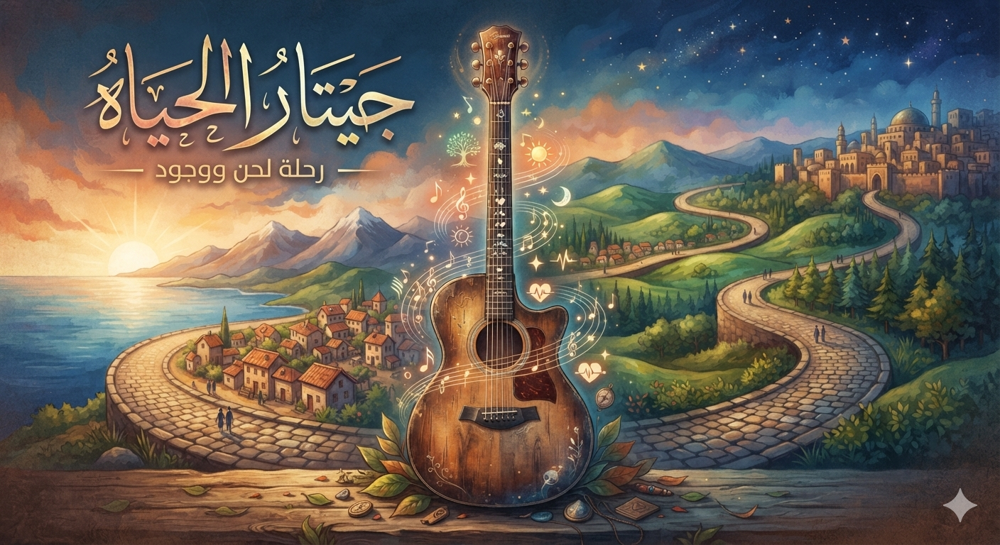
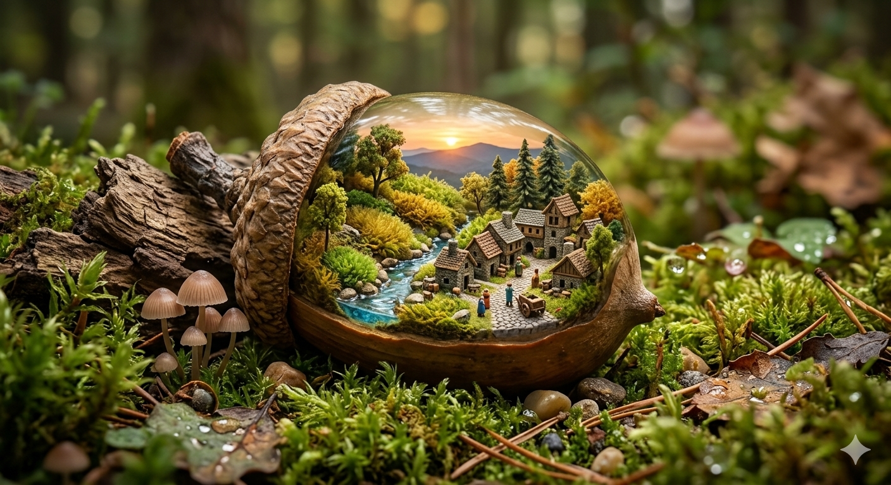

عني :

أهلاً بالجميع!
مرحباً بكم في موقعي الإلكتروني
ستجدون هنا كل ما تحتاجون معرفته عني.
انا مطور ويب لدي مشاريع رائعه ولدي خبر سنه .
انا ايضا مطور ذكاء اصطناعي ولدي مجموعه من نماذج الذكاء الاصطناعي.
اسمي : صالح إدريس
عمري : 17
موقعي :
مشروعي :


التواصل معي :
جميع الحقوق محفوظه لدي صالح ادريس